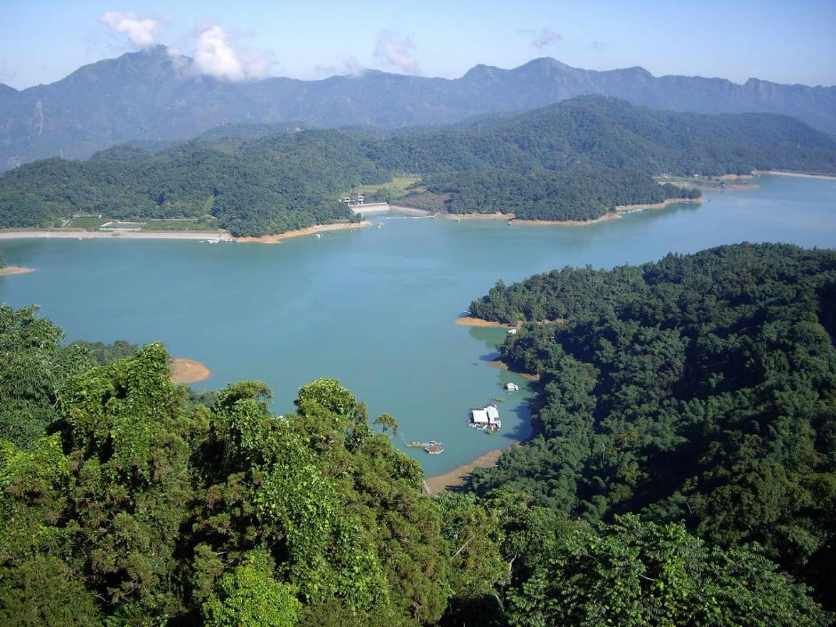
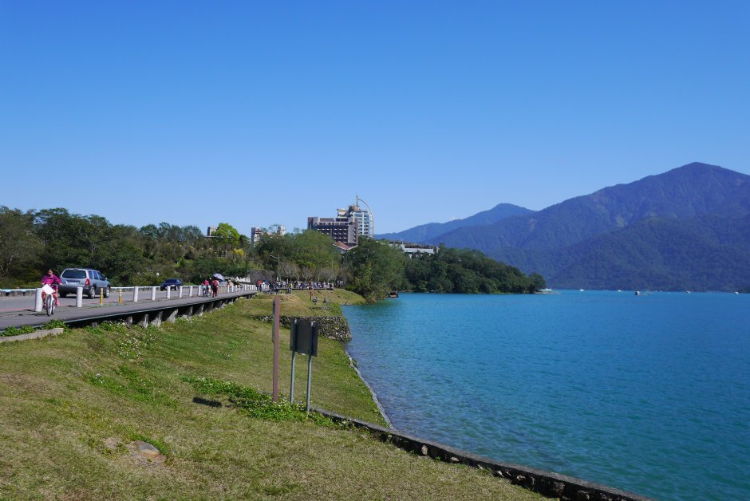

日月潭國家風景區簡介
日月潭國家風景區－遊日月潭

日月潭國家風景區位於南投縣魚池鄉水社村，是全台最大的淡水湖泊，故日月潭有人稱為『海仔』或『水社海仔』；因潭景霧薄如紗，水波漣漣而得名為『水沙連』，四周群巒疊翠，海拔高748公尺，面積116平方公里，全潭以拉魯島(光華島)為界，南形如月弧，北形如日輪，所以改名為『日月潭』，潭面景像萬千，為出色的天然大湖，921大地震面臨前所未有的浩劫，帶來重建的契機，震後景點升格再現日月潭光華。日月潭國家風景區於2014年，被觀光局列為適合銀髮族出遊的熱門風景區之一，以「車程短、走得慢、吃的軟、看的久」等主打訴求，強調養生、樂活、自然、無障礙，規劃「慢活悠遊之旅」行程，鼓勵長者出遊體驗不一樣的國內旅遊。遊日月潭可選擇搭遊艇、健行、騎自行車等方式，在日月潭共有水社碼頭、伊達邵碼頭、朝霧碼頭、玄光寺碼頭等四個公共碼頭，一般遊湖行程大約需二小時左右，您有可在碼頭租用手划船與知心伴侶倘佯在日月潭的湖光水色浪漫一下。日月潭國家風景區管理處近年來規劃了幾條自行車悠遊的路線，其中以『環湖公路』為最佳，環湖公路全長約33公里，建議以自行車為主要交通工具，再搭配延途各個景點作為親子休閒一日遊，不但可以健身，又可悠閒的瀏覽體會日月潭好山好水與美麗風景；日月潭環湖公路有順時針方向或逆時針方向兩種環湖方式，『順時針環湖方向』係緊鄰潭邊，以欣賞月月潭潭面的湖光水色為主，但在安全上因在路的外側，所以也較逆時針方向危險；逆時針環湖方向因對向來車會阻擋到視線，故延途也較無法隨意欣賞日月潭潭面的湖光水色。
日月潭國家風景區－旅遊景點
◎向山遊客中心：以擁抱日月潭為意象，讓建築與自然環境共生，兼具遊客中心與風景區管理處等兩項機能，建築物本身流暢的線條、湖水綠、草坪青、蔚藍的天空、清水模灰色簡約等元素，因日月潭晨昏晴雨、四季遞嬗而有不同的景色及美感。 ◎伊達邵碼頭：與日月潭纜車僅900公尺，是日月潭4大碼頭之一，原為邵族主要居住地，舊稱德化社，後規劃周邊整併為占地328坪的逐鹿市集，提供日月潭在地農特展、原住民料理、手工藝術品。◎日月潭環潭自行車道：曾被CNN旗下生活旅遊網站CNNGO評選為全球十大最美自行車道之一，單車漫遊是貼近體驗日月潭美景、周邊景點最推薦的旅遊方式，可自由調整行程、賞看日月潭美景與沿岸人文風土。◎水蛙頭步道：步道位於大竹湖及伊達邵之間長500公尺、落差約60公尺的高架棧道，入口處有青蛙雕像及小客車停車場，終點為水濱的環狀動線，潭邊設置「青蛙疊羅漢」銅雕，也是水位升降的觀測指標，沿途林木、孟宗竹林、蕨類生態豐富，行走其中，生意盎然。◎日月潭纜車：全台第一個BOT興建的纜車，全長1877公尺，起訖站位於日月潭與九族文化村，搭乘時間約7分鐘，提供高空瀏覽日月潭全景、便捷來往於九族文化村與日月潭之間交通機能。◎拉魯島：位於日月潭中心，為日月潭分界，是旅客必遊之地，是原住民邵族傳說中祖靈安息的聖地，原本島上有座月下老人亭，因921大地震與長期波浪侵襲導致面積減少，已將月下老人亭遷移至日月潭龍鳳宮，並將拉魯島規劃為原住民區域且限制外人登島。◎文武廟：建於1938年、1969年重建，採中國北朝宮殿式建築，分為三殿供奉開基元祖、文昌帝君、關聖帝君及岳武穆王，後方大成殿供奉孔子等，儒道釋三教諸神同居一堂，規模龐大的建築，在日月潭高山碧水的映襯下，更顯氣宇不凡。◎慈恩塔：位於青龍山頂，於民國60 (1971) 年元月完工，塔頂高度達海拔1000公尺，為日月潭最高點，從慈恩塔最高層的塔頂瞭望，可看見拉魯島(光華島)、玄奘寺與慈恩塔皆同在一條中軸線上，採中國寶塔式建築，共分九層。塔頂兩層之建築，為王太夫人靈堂，環境清幽，並設有石桌、石椅可供人休憩。◎梅荷園：原是一個憲兵營區，設有長廊式涼亭和桌椅，擁有居高臨下無障礙的廣闊視野，向下望可欣賞廣闊的日月潭潭面，還可看見遊客搭乘遊艇不時穿梭；另闢有石階步道可步行到湖邊。
留言板
梅荷園：原是一個憲兵營區，設有長廊式涼亭和桌椅，擁有居高臨下無障礙的廣闊視野，向下望可欣賞廣闊的日月潭潭面，還可看見遊客搭乘遊艇不時穿梭；另闢有石階步道可步行到湖邊。